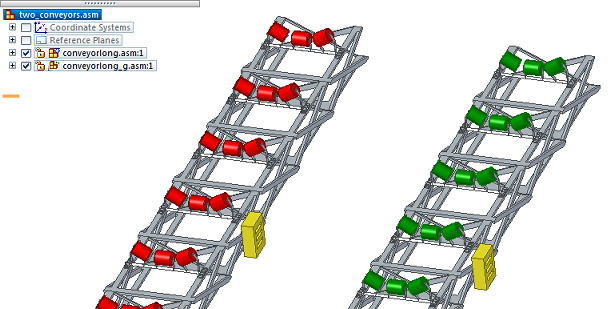
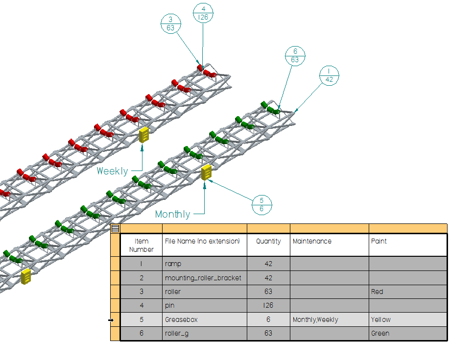

Example: Show custom occurrence properties in a parts list
This workflow consists of three parts; which are covered in this topic.
Learn how to show custom occurrence properties in a parts list by watching the following video.
Make custom occurrence properties available in an assembly
Before you can show custom occurrence properties in a parts list, they must be added to the assembly model.
In the assembly document, at the top of Assembly PathFinder, right-click the assembly name and choose the Occurrence Properties command
 .
.In the Occurrence Properties dialog box, click the Add Custom Occurrence Properties button .
This reads the predefined custom occurrence property columns and value definitions from CustomOccurrenceProperty.xml into the assembly model. While the property names are predefined in the .xml file and cannot be changed in the assembly, you can assign the values for the custom properties for each occurrence of a part or subassembly where they apply. For more information, see Custom occurrence properties in assembly.
Example:This top-level assembly (two_conveyors.asm) contains two conveyor belt roller assemblies, without the belts. The yellow boxes are lubrication reservoirs (greasebox.par).The same part is used in multiple locations on each conveyor belt. The lubrication reservoirs need to be refilled on different maintenance schedules, because they dispense lubricant at different rates.
The reservoirs on the red rollers need to be refilled weekly.
The reservoirs on the green rollers need to be refilled monthly.

You can document and propagate these unique maintenance schedule requirements using the custom occurrence property, Maintenance, in the Occurrence Properties dialog box.
Assign custom occurrence property values:
In the Placement Name column, right-click the top-level assembly and choose Expand All.
This expands the list of all parts and subassemblies, making it easier to locate the occurrences to which you want to assign custom properties and values.
For each of these parts or components:
Click in the cell for the corresponding property column, and then select or type a value.
If you are changing an existing value in a lower-level part or subassembly, then also right-click the cell and choose the Add Override command.
Note:For the Maintenance custom occurrence property that is provided in the default CustomOccurrenceProperty.xml file, you can choose from the list of predefined values (Daily, Weekly, Bi-Weekly, Monthly, Quarterly, or Yearly).
Example:Locate all six occurrences of greasebox.par, and then assign the appropriate maintenance value according to whether it is used in the conveyor belt on the red rollers (Maintenance=Weekly) or the conveyor belt on the green rollers (Maintenance=Monthly).
When you are finished assigning custom occurrence property values, click Apply and then OK to close the dialog box.
Save and close the assembly document.
Reference custom occurrence properties in the parts list
In the Draft environment, you can define a column to show the values of custom occurrence properties, which are defined in the Occurrence Properties dialog box in an assembly. Using custom occurrence properties in a parts list lets you show all of the different values for a part property that was used multiple times in an assembly, instead of the same value for all of the occurrences of the same part.
You should show custom occurrence properties in your parts list when you have:
Different maintenance or lubrication schedules for the same part, based on its location and use.
Assembly instructions or technical requirements notes that vary slightly.
Different location designators or IDs or room numbers for the same part.
Use the Parts List command to place a parts list for the assembly drawing view.
Right-click the parts list and choose Properties.
In the Parts List Properties dialog box, click the Columns tab.
Add the custom column to the table:
From the Properties list, select the name of the custom occurrence property that you want to add to the table. Look for a property name with (Occurrence Property) appended to it.
Example:For this example, select Maintenance (Occurrence Property).
Click the Add Column button.
The name of the property that you selected in the Properties list is added to the Columns list.
Define the custom column content by doing the following:
In the Columns list, click the column name that you added in the previous step.
Its property text string is displayed in the Property text box.
Example:%{Maintenance/OP|G}
Its title, Maintenance, is displayed in the Column Header box.
Specify the formatting to be applied to the evaluated property text:
In the Property text box, click within the property text string.
The property text string turns red to indicate it can be formatted.
Click the Format button located to the right of the Property text box.
In the Format Values dialog box, select the type of formatting you want to apply.
The options that are available depend on the type of value the property text returns.
Example:For textual information, you can click the Text case check box, and then select UPPERCASE, lowercase, Sentence case, or Title Case.
Click OK to close the Format Values dialog box.
In the Parts List Properties dialog box, click the List Control tab, and then in the Global section, select Atomic list (all parts) .
Selecting this option creates a parts list that shows each unique part and subassembly on a different row. It also shows the union of all property values for the same column in a single cell.
Example:This means that all of the Maintenance custom occurrence property values in greasebox.par are shown in the same cell in the Maintenance column in the parts list.
Click the Options tab, and then use the Item number separator box to specify the characters and spaces to be inserted between each custom occurrence value in the table cell.
The default character is a comma (,). Adding extra spaces improves legibility.
Click OK to update the parts list and close the Parts List Properties dialog box.
In the conveyor example, the Maintenance and Paint columns that were defined in the Occurrence Properties dialog box in the assembly, two_conveyors.asm, are shown in the parts list.
Item Number |
File Name (no extension) |
Quantity |
Maintenance |
Paint |
|---|---|---|---|---|
1 |
ramp |
42 |
||
2 |
mounting_roller_bracket |
42 |
||
3 |
roller |
63 |
Red |
|
4 |
pin |
126 |
||
5 |
greasebox |
6 |
Monthly, Weekly |
Yellow |
6 |
roller_g |
63 |
Green |
Add callouts to identify parts with custom requirements
Item balloons on a parts list only show the item number of a part and how many times it is used. To show the unique custom property values of each occurrence of the part in the drawing view, you can add associative callouts.
Choose the Home tab→Annotations group→Callout command.
In the Callout Properties dialog box, on the General tab, click in the Callout text box, and then click the Property Text button.
In the Select Property Text dialog box, from the Source list at top-right, select From graphic connection.
The Properties list updates to show all of the custom occurrence properties at the top of the list, with the property name followed by (Occurrence Property).
In the Properties list, click the custom occurrence property that you want to reference in the callout, and then click the Select button.
Example:You also can double-click the property name, Maintenance (Occurrence Property), to select it.
Click OK to close the Select Property Text dialog box.
Click OK to close the Callout Properties dialog box.
In the drawing view of the assembly, locate an occurrence of the part and click to place the callout.
Continue clicking the other occurrences of the part that you want to document with the custom occurrence property values.
Example:Locate and click all three occurrences of Greasebox.par on the red conveyor belt. The callout text on each should display the value, Weekly.
Locate all three occurrences of Greasebox.par on the green conveyor belt and add callouts to them. The callout text should show the value, Monthly.

How do I
Create a parts listCreate a subassembly parts list
Create an exploded parts list
Create a total length parts list
Create a parts list for flexible hoses and tubing
Create a family of assemblies parts list
Exclude parts from an exploded parts list
Open a model from a parts list
Example: Show custom properties and materials in a parts list
Example: Show sheet metal material thickness in a parts list
Renumber a parts list
Change the active parts list
Display assembly occurrences in a drawing view or parts list
Convert a parts list to a table
Copy a parts list to the clipboard
Learn more
Parts listsFamily of Assemblies (FOA) parts lists
Assembly part views and parts lists
Subassembly drawing views and parts lists
Exploded parts lists
Custom occurrence properties in parts lists
Occurrence quantity overrides in parts lists
Item numbers in parts lists
Saving and reusing the parts list format
Look up more details
Parts List commandParts List command bar
Parts List Properties dialog box
Copy Contents command
Convert To Table command